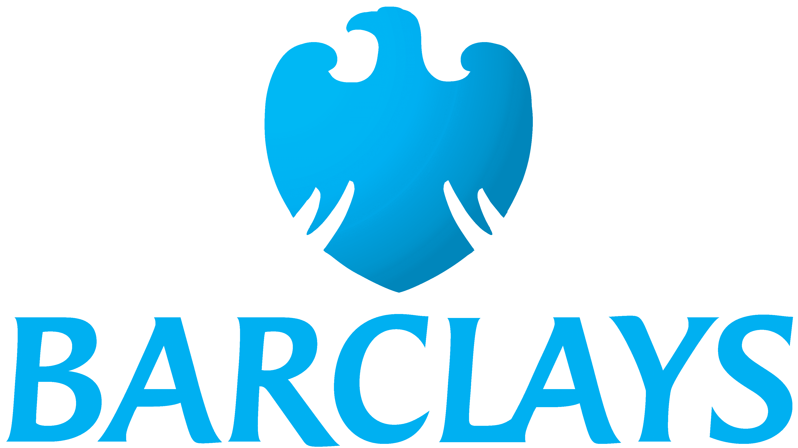

Sahil Vora
Software Developer @ AWS | MSc CS ASU | Computer Vision Research Assistant

Hello! I am a Software Developer at Amazon Web Services (AWS) and a researcher focused on Computer Vision, Machine Learning, and Generative AI, with applications in medical imaging and healthcare.
I earned my Master’s in Computer Science from Arizona State University, where I conducted my thesis in association with Mayo Clinic, Phoenix, Arizona, researching unsupervised denoising of medical imaging using diffusion models. This work was carried out with the Visual Representation and Processing Group under Dr. Baoxin Li, focusing on improving image quality without extensive labeled datasets.
My current work at AWS involves cloud readiness, infrastructure operations, and automation, including the development of multi-agent operators to assist engineers and enhancing region-wide automation for a Tier 0 AWS service. This experience provides practical insight into large-scale systems that complements my research perspective.
This website presents my projects, publications, and research contributions. You can learn more about me or reach out at sahilvora2024@gmail.com.
2025
- Co-Authored journal published at IEEE Big Data and analytics. Transferable Variational Feedback Network for Vendor and Sequence Generalization in Accelerated MRI
- First author paper published at IEEE International Symposium on Biomedical Imaging. Demonstrated about unsupervised denoising of MRI scans.
- Joined Amazon AWS as a Software Developer
2024
- Co-Author paper accepted at ICPR, 2024. Demonstrated adaptive few shot learning via task-driven context.
- Joined Barclays as Technology Developer to work on developing Data Platforms and GenAI solutions.
- Paper accepeted at International Conference on AI in Healthcare, Swansea, UK and publised at Springer Nature Switzerland.
- Graduated from Arizona State University with Master of Science in Computer Science (Thesis).
- Presented poster at ASU Machine Learning Day 2024.
- Successfully defended Masters Thesis on topic 'Towards Unsupervised Denoising of Magnetic Resonance Scans'.
- Abstract accepted at ISMRM and ISMRT Annual Meeting and Exhibition 2024, Singapore.
2023
- Received the Best Paper Award at the 1st International Workshop on GLOW at IJCAI 2023 in Macao.
- Paper accepted for proceedings at IJCAI 2023 in the GLOW Workshop.
- Started as a Summer Developer Analyst Intern at Barclays.
- Commenced work as a Research Assistant under the guidance of Dr. Baoxin Li in the field of Computer Vision and Medical Imaging.
- Appointed as a Teaching Assistant for "Introduction to Software Engineering-CSE 360" under Professor Robert Lynn Carter.
2022
- Attended my first conference at the Asian Machine Learning Conference - ACML 2022 (Virtual).
- Engaged in volunteer research work at Lab V2 under the supervision of Dr. Paulo Shakarian.
- Started as a Teaching Assistant at the School of Mathematical and Statistical Sciences for College Algebra (MAT 117) and Mathematics for Business Analysis (MAT 211).
- Embarked on my journey in pursuing a Master's in Computer Science at Arizona State University.
- Achieved the title of Kaggle Dataset Master.
2021
- Joined Sabre as a Software Developer I and became a Google Cloud Practitioner.
- Promoted to the role of Software Developer at Publicis Sapient.
- Published my first paper at IRJET'21.
2020
- Attained the status of a Salesforce Certified B2C Commerce Developer.
- Promoted to Associate Technology L1 (Full Time) at Publicis Sapient.
- Successfully completed and graduated with a Bachelor's degree from Manipal Institute of Technology.
- Started as a Software Developer Trainee Engineer at Publicis Sapient
2019
2018
- Initiated my research internship at Indian Space Research Organisation.
- Promoted to the position of President at The Photography Club, Manipal.
2017
- Joined The Photography Club, Manipal, as a Management Committee Member.
- Completed my first internship at a funded startup, "Pentaur Technology."
2016
Education

Master of Science in Computer Science
Arizona State University 2022 - 2024
Bachelor of Technology in Computer Science
Manipal Institute of Technology 2016 - 2020
Experience

Software Developer
Amazon Web Services (AWS) 2025 - Present

Technology Developer
Barclays June 2024 - Dec. 2024
Software Developer
Sabre Oct. 2021 - Aug. 2022
Associate Software Developer
Publicis Sapient Jan. 2020 - Oct. 2021